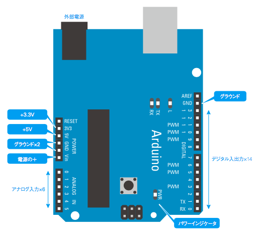
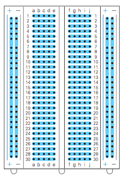
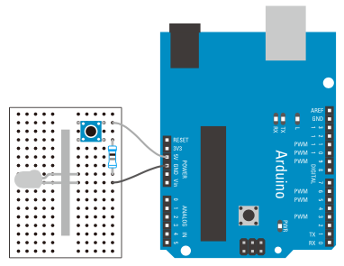

2. 動作確認
2-1. キットの確認
- 【Arduino本体】
- ※人によって多少異なります。

- 電源（+5V、+3.3V）
- 電流が流れる入り口。回路によって大きさを使い分ける。
- GND（同じ働きのものが3箇所）
- 「グラウンド」と読む。電流の出口。
- デジタル入出力（D0-D13）
- デジタル信号を入出力できる。
- アナログ入力（A0-A5）
- アナログ信号を入力できる。
- アナログ出力（PWM）
- アナログ信号を出力できる。
- パワーインジケータ
- Arduinoに電源は入っている（PCに接続されている）ときに点灯する。
- インジケータ「L」「TX」「RX」
- L…「DIGITAL 13番PIN」から電圧が出力されているときに点灯する。
- TX…データを送信しているときに点灯する。
- RX…データを受信しているときに点灯する。
Arduinoの種類
- 【ブレッドボード】

ソケット（穴）に部品を挿し込むだけで電子回路の試作・実験ができるたいへん便利なもの。各ソケットは図の水色の帯びで記してあるように内部でつながっており、電気が流れる（導通している）。
- 【ジャンプワイヤ】
- 長いものが10本、短いものが10本

- 【抵抗器】
- 200Ω1本、330Ω2本、1KΩ1本、1MΩ1本

電流を流れにくくするパーツ。LEDやセンサーなどのパーツに流しても良い電流の上限値が決まっており、抵抗を挟んでいないと、LEDに大きな電流が流れ猛烈に発熱し焦げ臭いにおいとともにLEDが焼き切れたり、センサーが動かなくなったりする。最悪の場合、Arduino本体まで壊してしまう場合もあるので、勝手に回路を組んで電流を流さないように！
抵抗値とカラーコード
- 【LED】
- 赤、黄色、緑、各1個

足の長いほうが「+」、短いほうが「-」。
- 【サーボモーター】

- 【振動モーター】

2-2. サンプルコードの実行
- 【手順】
-
- ArduinoとPCをつなぐ。
- アプリケーションフォルダから「Arduino IDE」を立ち上げる。
- 「Select Board」をクリックし「Arduino Uno」を選択する。
- 「File」メニューの「Examples」-「01.Basics」-「Blink」を選択。
- 左上の「チェックアイコン」をクリックし、ソースコードにエラーがないか検証する。（※これをしないと本体が壊れる可能性があるので、毎回必ず行うこと）
- 隣の「矢印アイコン」をクリックし、マイコンボードにプログラムを書き込む。
- Arduinoの「L」の部分がチカチカ点滅すれば動作確認完了！
- サンプルファイルは、あやまって書き換えないように閉じておく。
- ※書き込んだプログラムは永久に保存され、次回からはPCにつなげるだけでプログラムが実行される。
2-3. 回路を組む
下図のように回路を組み、LEDを光らせてみる。

- ※「5V > 抵抗器 > LED > GND」へと流れる電流の道筋を意識すること。
- 【スイッチを付けてみる】

※現状では、電源（USB）から流れる電流をそのまま受けとってLEDを光らせているだけ。プログラムで入出力を制御したい場合は、番号がついたピンを使う。
- 【デジタル出力】
- 5Vに挿さっているジャンプワイヤをD12へ変更し、以下のプログラムを新規ファイルに書き込む。（※検証を忘れずに）
-
//LEDに接続したピンの番号
int ledPin = 12;
//setupは最初に1度だけ実行される
void setup(){
//LEDに接続したピンのモードをOUTPUT(出力)に設定
pinMode(ledPin, OUTPUT);
}
//loopはArduinoボードの電源がオンであるかぎり、繰り返し実行される
void loop(){
//LEDに接続したピンの値をHIGHにセットしてLEDを点灯
digitalWrite(ledPin, HIGH);
//1000ms(1s)待つ
delay(1000);
//LEDに接続したピンの値をLOWにセットしてLEDを消灯
digitalWrite(ledPin, LOW);
//1000ms(1s)待つ
delay(1000);
}
- 【アナログ出力】
- ジャンプワイヤをD9へ変更し、以下のプログラムを書き込む。（※検証を忘れずに）
-
int ledPin = 9;
int value = 0;
int set = 1;
void setup(){
//アナログの場合は入力と出力の穴が違うのでpinModeの設定は不要
}
void loop(){
value += set;
if(value > 255){
set = -1;
}else if(value < 0){
set = 1;
}
//LEDに接続したピンの値にセットする
analogWrite(ledPin, value);
//30ms(0.03s)待つ
delay(30);
}
Arduino - Language Reference
2-4. シリアルモニタで値を確認する
int ledPin = 9;
int value = 0;
int set = 1;
void setup(){
//シリアル通信のデータ転送レートを指定する。単位はbps(ビット/秒)
Serial.begin(9600);
}
void loop(){
value += set;
if(value > 255){
set = -1;
}else if(value < 0){
set = 1;
}
analogWrite(ledPin, value);
//シリアルポートに値を出力する
Serial.println(value);
delay(30);
}
※Arduinoの右上にある「虫眼鏡アイコン」からシリアルモニターを表示し、値を確認する。
シリアル通信とは